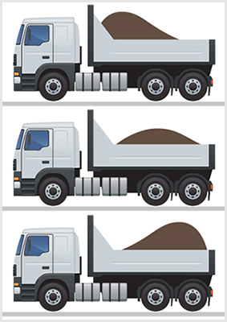
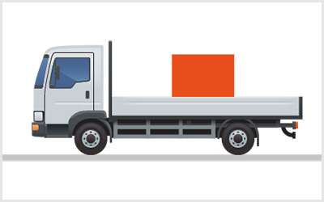
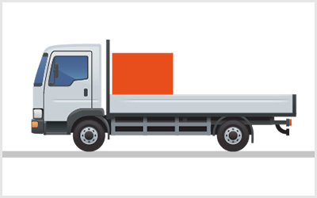
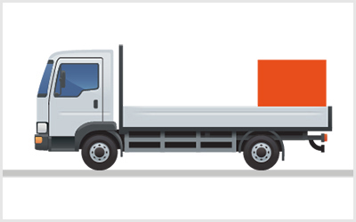
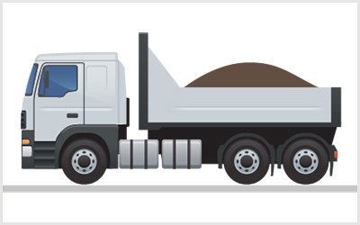
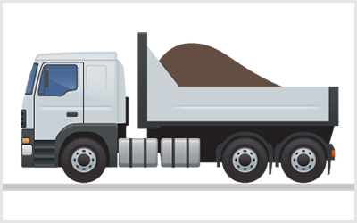

<!DOCTYPE html>
<html lang="hu">
<head>
    <meta charset="UTF-8" />
    <meta name="viewport" content="width=device-width, initial-scale=1.0" />
    <title>Rakomány elhelyezése – „C” kategória - Munkavédelem, tűzvédelem, szállítás</title>
    <meta property="og:site_name" content="KRESZ teszt &ndash; „C” kategória - Munkavédelem, tűzvédelem, szállítás" />
    <meta property="og:description" content="Rakomány elhelyezése kérdések és helyes válaszok („C” kategória - Munkavédelem, tűzvédelem, szállítás)" />
    <link rel="stylesheet" href="../test.css" />
</head>
<body>
    <div class="topic-header">
        <nav class="topic-breadcrumbs">
            <a href="index.html" class="crumb-link">&laquo; „C” kategória - Munkavédelem, tűzvédelem, szállítás témakörei</a>
            <span class="crumb-sep">/</span>
            <span class="crumb-current">Rakomány elhelyezése</span>
            <span class="crumb-sep">/</span>
            <a href="../../index.html" class="crumb-home">Interaktív teszt &raquo;</a>
        </nav>

        <div class="topic-title-section">
            <span class="topic-badge">Témakör 17 / 25</span>
            <h2>Rakomány elhelyezése <small class="topic-badge-info">(21 kérdés, vizsgán: 1 db., 1 pont)</small></h2>
        </div>

        <div class="topic-nav-bar">
            <a href="group-1668701503.html" class="nav-btn nav-prev-btn" title="Szállító járművek típusai">&laquo; Előző témakör</a>
            <a href="index.html" class="nav-btn nav-hub-btn">Témakörök listája</a>
            <a href="group-1668701713.html" class="nav-btn nav-next-btn" title="Járművek terhelhetősége">Következő témakör &raquo;</a>
        </div>
    </div>

    <div class="group" id="group-1668701689">
        <div class="questions">
            <div class="question" id="question-703024">
                                                                        <!-- <h4>261. Mi a járművezető teendője az általa vezetett jármű rakodása közben?</h4> -->
                        <dl>
                            <dt>261. Mi a járművezető teendője az általa vezetett jármű rakodása közben? <a href="#question-703024"><small>#703024</small></a></dt>
                                                            <dd class="correct">Ellenőriznie kell a rakodást a helytelen rakodás elkerülésének érdekében.</dd>
                                                            <dd class="">Az áru minőségének ellenőrzése.</dd>
                                                            <dd class="">Az áru csomagolásának ellenőrzése és mennyiségi leltár készítése.</dd>
                                                    </dl>
                    </div>
                                                            <div class="question" id="question-703029">
                                                                        <!-- <h4>262. Hogyan kell a rakományt a járművön elhelyezni és rögzíteni?</h4> -->
                        <dl>
                            <dt>262. Hogyan kell a rakományt a járművön elhelyezni és rögzíteni? <a href="#question-703029"><small>#703029</small></a></dt>
                                                            <dd class="correct">Úgy, hogy ne tudjon elmozdulni, felborulni, leesni vagy elszóródni.</dd>
                                                            <dd class="">Úgy, hogy a jármű oldalfalainak terhelését el kell kerülni.</dd>
                                                            <dd class="">Lehetőleg az első kerekek terhelése nagyobb, a hátsó kerekeké kisebb legyen.</dd>
                                                    </dl>
                    </div>
                                                            <div class="question" id="question-703030">
                                                                        <!-- <h4>263. Hogyan kell a rakományt a járművön elhelyezni?</h4> -->
                        <dl>
                            <dt>263. Hogyan kell a rakományt a járművön elhelyezni? <a href="#question-703030"><small>#703030</small></a></dt>
                                                            <dd class="correct">Úgy, hogy valamennyi kereket egyformán terhelje.</dd>
                                                            <dd class="">Úgy, hogy az első kerekekre nagyobb terhelés jusson.</dd>
                                                            <dd class="">Úgy, hogy a hátsó kerekekre nagyobb terhelés jusson.</dd>
                                                    </dl>
                    </div>
                                                            <div class="question" id="question-703046">
                                                                            <div class="exercise-image">
                                
                            </div>
                                                <!-- <h4>264. Az ábrán látható változatok közül melyik billenőplatós tehergépkocsin helyezték el helyesen a rakományt?</h4> -->
                        <dl>
                            <dt>264. Az ábrán látható változatok közül melyik billenőplatós tehergépkocsin helyezték el helyesen a rakományt? <a href="#question-703046"><small>#703046</small></a></dt>
                                                            <dd class="correct">A középső ábrán láthatón, mert a rakomány a tengelyeket egyformán terheli.</dd>
                                                            <dd class="">Az alsó ábrán láthatón, mert a plató könnyebben billenthető.</dd>
                                                            <dd class="">A felső ábrán láthatón, mert a rakomány az első tengelyt jobban terheli.</dd>
                                                    </dl>
                    </div>
                                                            <div class="question" id="question-703049">
                                                                        <!-- <h4>265. Akadályozhatja-e a rakomány a jármű vezetőjét a szabad kilátásban és a vezetésben?</h4> -->
                        <dl>
                            <dt>265. Akadályozhatja-e a rakomány a jármű vezetőjét a szabad kilátásban és a vezetésben? <a href="#question-703049"><small>#703049</small></a></dt>
                                                            <dd class="correct">Nem.</dd>
                                                            <dd class="">Igen.</dd>
                                                            <dd class="">Csak kis mértékben.</dd>
                                                    </dl>
                    </div>
                                                            <div class="question" id="question-703103">
                                                                        <!-- <h4>266. A pótkocsin elhelyezett rakomány...</h4> -->
                        <dl>
                            <dt>266. A pótkocsin elhelyezett rakomány... <a href="#question-703103"><small>#703103</small></a></dt>
                                                            <dd class="correct">a rakfelület oldalfalainak lezárását nem gátolhatja.</dd>
                                                            <dd class="">és a pótkocsi együttes magassága nem lehet több mint 4 méter.</dd>
                                                            <dd class="">az oldalfal magasságánál nem nyúlhat túl.</dd>
                                                    </dl>
                    </div>
                                                            <div class="question" id="question-703105">
                                                                        <!-- <h4>267. Mennyire nyúlhat túl pótkocsi rakfelületéről oldalirányba a rakomány?</h4> -->
                        <dl>
                            <dt>267. Mennyire nyúlhat túl pótkocsi rakfelületéről oldalirányba a rakomány? <a href="#question-703105"><small>#703105</small></a></dt>
                                                            <dd class="correct">A rakomány és a pótkocsi együttes szélessége a 2,5 métert nem haladhatja meg.</dd>
                                                            <dd class="">Hirtelen fékezés esetén is csak kismértékben tudjon elmozdulni.</dd>
                                                            <dd class="">Csak olyan mértékben, hogy a rakomány és a pótkocsi együttes szélessége ne haladja meg a vonójármű szélességét.</dd>
                                                    </dl>
                    </div>
                                                            <div class="question" id="question-714428">
                                                                        <!-- <h4>268. Gátolhatja-e a rakomány a jármű ajtajainak, illetve a rakfelület oldalfalainak lezárását?</h4> -->
                        <dl>
                            <dt>268. Gátolhatja-e a rakomány a jármű ajtajainak, illetve a rakfelület oldalfalainak lezárását? <a href="#question-714428"><small>#714428</small></a></dt>
                                                            <dd class="correct">Nem.</dd>
                                                            <dd class="">Igen.</dd>
                                                            <dd class="">Csak kis mértékben.</dd>
                                                    </dl>
                    </div>
                                                            <div class="question" id="question-714429">
                                                                            <div class="exercise-image">
                                
                            </div>
                                                <!-- <h4>269. Szabályosan van-e a rakfelületen elhelyezve a nagy súlyú rakomány az ábrán látható módon?</h4> -->
                        <dl>
                            <dt>269. Szabályosan van-e a rakfelületen elhelyezve a nagy súlyú rakomány az ábrán látható módon? <a href="#question-714429"><small>#714429</small></a></dt>
                                                            <dd class="correct">Igen, mert a rakomány az összes tengelyt közel egyformán terheli.</dd>
                                                            <dd class="">Nem, mert intenzív fékezés esetén a rakomány a vezetőfülke irányába megcsúszhat.</dd>
                                                            <dd class="">Igen, mert így a rakomány a hátsó tengelyt jobban terheli.</dd>
                                                    </dl>
                    </div>
                                                            <div class="question" id="question-714430">
                                                                            <div class="exercise-image">
                                
                            </div>
                                                <!-- <h4>270. Szabályosan van-e a rakfelületen elhelyezve a nagy súlyú rakomány az ábrán látható módon?</h4> -->
                        <dl>
                            <dt>270. Szabályosan van-e a rakfelületen elhelyezve a nagy súlyú rakomány az ábrán látható módon? <a href="#question-714430"><small>#714430</small></a></dt>
                                                            <dd class="correct">Nem, mert a rakomány az első tengelyt jobban, a hajtott hátsó tengelyt kevésbé terheli.</dd>
                                                            <dd class="">Igen, mert a rakomány intenzív fékezés esetén sem tud előre elmozdulni.</dd>
                                                            <dd class="">Nem, mert intenzív gyorsítás esetén a rakomány hátrafelé elmozdulhat.</dd>
                                                    </dl>
                    </div>
                                                            <div class="question" id="question-714431">
                                                                            <div class="exercise-image">
                                
                            </div>
                                                <!-- <h4>271. Szabályosan van-e a rakfelületen elhelyezve a nagy súlyú rakomány az ábrán látható módon?</h4> -->
                        <dl>
                            <dt>271. Szabályosan van-e a rakfelületen elhelyezve a nagy súlyú rakomány az ábrán látható módon? <a href="#question-714431"><small>#714431</small></a></dt>
                                                            <dd class="correct">Nem, mert a rakomány a hátsó tengelyt jobban, az első tengelyt kevésbé terheli.</dd>
                                                            <dd class="">Nem, mert intenzív gyorsítás esetén a rakomány a hátfalon átbillenve leeshet.</dd>
                                                            <dd class="">Igen, mert a rakomány így a hátsó tengelyt jobban terheli.</dd>
                                                    </dl>
                    </div>
                                                            <div class="question" id="question-714432">
                                                                            <div class="exercise-image">
                                
                            </div>
                                                <!-- <h4>272. Helyes-e az ömlesztett áru ábrázolt módon történő elhelyezése a rakfelületen?</h4> -->
                        <dl>
                            <dt>272. Helyes-e az ömlesztett áru ábrázolt módon történő elhelyezése a rakfelületen? <a href="#question-714432"><small>#714432</small></a></dt>
                                                            <dd class="correct">Igen, mert a rakomány az összes tengelyt közel egyformán terheli.</dd>
                                                            <dd class="">Nem, mert intenzív fékezés esetén a rakomány a vezetőfülke irányába megcsúszhat.</dd>
                                                            <dd class="">Igen, mert így a rakomány menet közben nem tud leszóródni a rakfelületről.</dd>
                                                    </dl>
                    </div>
                                                            <div class="question" id="question-714433">
                                                                            <div class="exercise-image">
                                
                            </div>
                                                <!-- <h4>273. Hogyan változik a tehergépkocsi menetstabilitása, ha az ábrán látható módon helyezik el a rakományt?</h4> -->
                        <dl>
                            <dt>273. Hogyan változik a tehergépkocsi menetstabilitása, ha az ábrán látható módon helyezik el a rakományt? <a href="#question-714433"><small>#714433</small></a></dt>
                                                            <dd class="correct">Az első tengelyen a tapadás jelentős csökkenése, esetleg teljes megszűnése következhet be.</dd>
                                                            <dd class="">Az első tengelyen a terhelés jelentős csökkenése a jármű könnyebb kormányzását teszi lehetővé.</dd>
                                                            <dd class="">A hátsó tengelyen a tapadóerő megnő, ami pozitívan hat a jármű menetstabilitására.</dd>
                                                    </dl>
                    </div>
                                                            <div class="question" id="question-714434">
                                                                        <!-- <h4>274. Túlnyúlhat-e nyitott rakfelületű pótkocsiról hátrafelé a rakomány?</h4> -->
                        <dl>
                            <dt>274. Túlnyúlhat-e nyitott rakfelületű pótkocsiról hátrafelé a rakomány? <a href="#question-714434"><small>#714434</small></a></dt>
                                                            <dd class="correct">Igen, legfeljebb két méterre, de a rakfelület hosszának felénél nem nagyobb távolságra.</dd>
                                                            <dd class="">Nem.</dd>
                                                            <dd class="">Csak akkor, ha ez nem balesetveszélyes.</dd>
                                                    </dl>
                    </div>
                                                            <div class="question" id="question-714435">
                                                                        <!-- <h4>275. A pótkocsin a rakományt úgy kell elhelyezni, hogy...</h4> -->
                        <dl>
                            <dt>275. A pótkocsin a rakományt úgy kell elhelyezni, hogy... <a href="#question-714435"><small>#714435</small></a></dt>
                                                            <dd class="correct">a közlekedés biztonságát, valamint a személy- és vagyonbiztonságot ne veszélyeztesse.</dd>
                                                            <dd class="">a vezetőt a szabad kilátásban csak kismértékben akadályozza.</dd>
                                                            <dd class="">oldalirányba ne nyúljon túl a rakfelületen.</dd>
                                                    </dl>
                    </div>
                                                            <div class="question" id="question-714436">
                                                                        <!-- <h4>276. Tehergépkocsival pótkocsit vontat. A vonójármű rakfelületéről milyen mértékben nyúlhat hátra a rakomány?</h4> -->
                        <dl>
                            <dt>276. Tehergépkocsival pótkocsit vontat. A vonójármű rakfelületéről milyen mértékben nyúlhat hátra a rakomány? <a href="#question-714436"><small>#714436</small></a></dt>
                                                            <dd class="correct">A pótkocsit vontató jármű rakománya hátra nem nyúlhat túl a rakfelületen.</dd>
                                                            <dd class="">Maximum két métert nyúlhat túl a rakfelületen.</dd>
                                                            <dd class="">Maximum a rakfelület hosszának a felével nyúlhat túl a rakfelületen.</dd>
                                                    </dl>
                    </div>
                                                            <div class="question" id="question-714437">
                                                                        <!-- <h4>277. Rakodórámpához történő tolatásnál...</h4> -->
                        <dl>
                            <dt>277. Rakodórámpához történő tolatásnál... <a href="#question-714437"><small>#714437</small></a></dt>
                                                            <dd class="correct">a rakodórámpa és a gépjármű között tartózkodni tilos.</dd>
                                                            <dd class="">a biztonság érdekében tolatóradart kell alkalmazni.</dd>
                                                            <dd class="">folyamatos hangjelzéssel kell a veszélyre a figyelmet felhívni.</dd>
                                                    </dl>
                    </div>
                                                            <div class="question" id="question-720933">
                                                                        <!-- <h4>278. Általában mennyire terhelhetők statikusan a kocsifalak?</h4> -->
                        <dl>
                            <dt>278. Általában mennyire terhelhetők statikusan a kocsifalak? <a href="#question-720933"><small>#720933</small></a></dt>
                                                            <dd class="correct">A homlokfal a jármű megengedett hasznos terhelésének 40%-áig, az oldalfalak a 30%-áig terhelhetők.</dd>
                                                            <dd class="">Az oldalfalak a jármű megengedett hasznos terhelésének 50%-áig, a homlokfal a 20%-áig terhelhető.</dd>
                                                            <dd class="">Csak csekély mértékben, a jármű megengedett hasznos terhelésének 5-10%-áig.</dd>
                                                    </dl>
                    </div>
                                                            <div class="question" id="question-720947">
                                                                        <!-- <h4>279. Mit nevezünk gyűjtőrakománynak az alábbiak közül?</h4> -->
                        <dl>
                            <dt>279. Mit nevezünk gyűjtőrakománynak az alábbiak közül? <a href="#question-720947"><small>#720947</small></a></dt>
                                                            <dd class="correct">Amikor különféle csomagolt és csomagolatlan állapotú árut rakodnak egy járműre.</dd>
                                                            <dd class="">Amikor az azonos csomagolású árut összegyűjtik.</dd>
                                                            <dd class="">Amikor több darabból áll a rakomány.</dd>
                                                    </dl>
                    </div>
                                                            <div class="question" id="question-720977">
                                                                        <!-- <h4>280. Gépjárműre szerelt daru üzemeltetése során...</h4> -->
                        <dl>
                            <dt>280. Gépjárműre szerelt daru üzemeltetése során... <a href="#question-720977"><small>#720977</small></a></dt>
                                                            <dd class="correct">a felfüggesztett teher alatt és a gép mozgáskörzetében tartózkodni tilos.</dd>
                                                            <dd class="">a rakodást fokozott óvatossággal és kellő körültekintéssel kell végrehajtani.</dd>
                                                            <dd class="">a rakodási 4er�letet korlítDgl0e,(kell `aTǩrOhni.</dd>
         ! �                 1 �(        `         </dl>
           ( $     </div>
0 `(    " (!                                                d�b sNa�c="1ueRt�on` id="quert�on)7"3013*>-! �                                             �0             �  b   `<!- <h4>281. Hogyen0qecývi a terhdlG�ce,gszpóqa!terv az áru rakfelületen töru�-nő bizton[�sos elhehyUXC9céd?|'h4> -->
  " (!      0 `(    $ 0"<dl>
                            <dt>2<1>"Hogyan segíti a terheléselosztási terv az áru rakfelületen történő biztonsˡGks elhelyezését? <a href="#yuEwtion-'2q<1# ><small>#721013</3maMl></a></dt>
   `           ( $            $"0*!       �  b            <ddc�qss="cozrDg�">A terhe|��{elosztási terv segítségével!a� áru tömegközépqo�vjðN-cmsmergt˨`ef!meghatározható, hogy a járműnek mewf%delő-e a teherbírá3a @ raoo}��fyalszáLlC�tásához.</dd>
                     0 `(     �0          $ 0"     `      <�d !l�ss"">A te2heMéselosztási terv segítségével megakadályozható az áru rakfelületen történő indokolatlan túlnyúlása.</dd>
                                                            <dd class="">A terheléselosztási terv segítségével megakadályozható, hogy az áru tömegközéppontja az oldalfal fölé essen.</dd>
                                                    </dl>
                    </div>
                                                            <div class="question" id="question-721029">
                                                                            <div class="exercise-image">
                                
                            </div>
                                                <!-- <h4>282. Helyes-e az ömlesztett áru ábrázolt módon történő elhelyezése a rakfelületen?</h4> -->
                        <dl>
                            <dt>282. Helyes-e az ömlesztett áru ábrázolt módon történő elhelyezése a rakfelületen? <a href="#question-721029"><small>#721029</small></a></dt>
                                                            <dd class="correct">Nem, mert a rakomány ilyen módon történő elhelyezése veszélyezteti a menetstabilitást.</dd>
                                                            <dd class="">Igen, mert a rakomány intenzív fékezés esetén sem tud előre elmozdulni.</dd>
                                                            <dd class="">Nem, mert intenzív fékezés esetén a rakomány a vezetőfülkére szóródhat.</dd>
                                                    </dl>
                    </div>
                                    </div>
        </div>
    </div>

    <div class="topic-footer-nav" style="margin-top: 40px;">
        <div class="topic-nav-bar">
            <a href="group-1668701503.html" class="nav-btn nav-prev-btn" title="Szállító járművek típusai">&laquo; Előző témakör</a>
            <a href="index.html" class="nav-btn nav-hub-btn">Témakörök listája</a>
            <a href="#top" class="nav-btn nav-top-btn" onclick="window.scrollTo({top:0,behavior:'smooth'}); return false;">^ Tetejére</a>
            <a href="group-1668701713.html" class="nav-btn nav-next-btn" title="Járművek terhelhetősége">Következő témakör &raquo;</a>
        </div>
        <p style="margin-top: 24px; text-align: center;"><a href="index.html" class="back-btn"><strong>&laquo; Vissza a „C” kategória - Munkavédelem, tűzvédelem, szállítás témaköreihez</strong></a></p>
    </div>

    <script src="../search.js"></script>
</body>
</html>